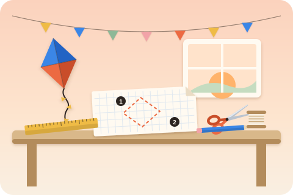
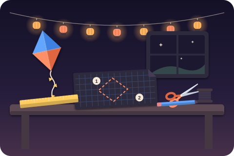
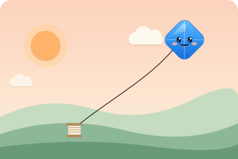
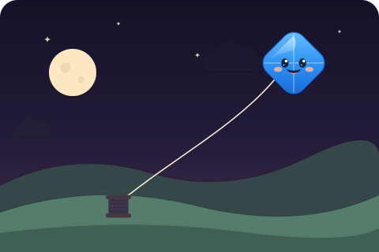

Free and open source, one command
Make any website installable and offline capable
installkite writes the web app manifest, every icon size from one image, a service worker with an offline page and the head tags. Your site folds into an app that installs on Android, iPhone, Windows and macOS.
npx installkite init- 4.4 kB runtime, gzipped
- 0 runtime dependencies
- 167 tests
acme-bakery.example
- 1FoldThe manifest and the icons turn the page into an app: a name, colors and a square icon.
- 2Flyinstallkite.js catches the install prompt. One press and the app takes off.
- 3LandThe app lands on the home screen with its own icon, window and splash screen.
The kit, part by part
One command writes all of it
Run it in any static site folder, or in a Vite, Next.js or Astro project. It scans your pages, takes the name and colors from your home page, finds your logo and asks a few questions (or none with --yes). Run it twice and nothing changes. Pick a part to see the real file it wrote for a three page bakery site.


Pattern no. 1Make any website installable
Skill level: one command. Cut along the dashed lines.
AssemblyRun npx installkite init in the site folder. Tools: none. Glue: none. Wind: any HTTPS host.
Bill of materials: all 27 files from a real run
- icons/icon-48.png905 B
- icons/icon-72.png1.4 kB
- icons/icon-96.png1.9 kB
- icons/icon-128.png2.6 kB
- icons/icon-144.png3.0 kB
- icons/icon-152.png3.0 kB
- icons/icon-192.png3.8 kB
- icons/icon-256.png5.3 kB
- icons/icon-384.png8.2 kB
- icons/icon-512.png11.3 kB
- icons/maskable-192.png3.8 kB
- icons/maskable-512.png11.2 kB
- apple-touch-icon.png3.7 kB
- favicon-16x16.png355 B
- favicon-32x32.png637 B
- favicon.ico1.9 kB
- icons/icon.svg288 B
- icons/screenshot-wide.png9.8 kB
- icons/screenshot-narrow.png10.5 kB
- manifest.webmanifest2.7 kB
- offline.html9.9 kB
- installkite.js10.2 kB
- about.html1.2 kB
- index.html1.2 kB
- menu.html1.2 kB
- sw.js7.7 kB
- installkite.config.json916 B
1The sailmanifest.webmanifest2.7 kB
The sail carries your name and colors into the sky. The manifest gives the browser the app name, the home screen label, theme and background colors, the start URL, the display mode, every icon and shortcuts taken from your navigation.
{
"id": "./",
"name": "Acme Bakery",
"short_name": "Acme Bakery",
"description": "Bread, cakes and coffee, baked every morning.",
"lang": "en",
"start_url": "./",
"scope": "./",
"display": "standalone",
"theme_color": "#e8590d",
"background_color": "#ffffff",
"icons": [
{
"src": "icons/icon-48.png",
"sizes": "48x48",
"type": "image/png",
"purpose": "any"
},
{
"src": "icons/icon-72.png",
"sizes": "72x72",
"type": "image/png",
"purpose": "any"
},
{
"src": "icons/icon-96.png",
"sizes": "96x96",
"type": "image/png",
"purpose": "any"
},
{
"src": "icons/icon-128.png",
"sizes": "128x128",
"type": "image/png",
"purpose": "any"
},
{
"src": "icons/icon-144.png",
"sizes": "144x144",
"type": "image/png",
"purpose": "any"
},
{
"src": "icons/icon-152.png",
"sizes": "152x152",
"type": "image/png",
"purpose": "any"
},
{
"src": "icons/icon-192.png",
"sizes": "192x192",
"type": "image/png",
"purpose": "any"
},
{
"src": "icons/icon-256.png",
"sizes": "256x256",
"type": "image/png",
"purpose": "any"
},
{
"src": "icons/icon-384.png",
"sizes": "384x384",
"type": "image/png",
"purpose": "any"
},
{
"src": "icons/icon-512.png",
"sizes": "512x512",
"type": "image/png",
"purpose": "any"
},
{
"src": "icons/maskable-192.png",
"sizes": "192x192",
"type": "image/png",
"purpose": "maskable"
},
{
"src": "icons/maskable-512.png",
"sizes": "512x512",
"type": "image/png",
"purpose": "maskable"
},
{
"src": "icons/icon.svg",
"sizes": "any",
"type": "image/svg+xml",
"purpose": "any"
}
],
"shortcuts": [
{
"name": "Menu",
"url": "./menu.html",
"icons": [
{
"src": "icons/icon-192.png",
"sizes": "192x192",
"type": "image/png"
}
]
},
{
"name": "About",
"url": "./about.html",
"icons": [
{
"src": "icons/icon-192.png",
"sizes": "192x192",
"type": "image/png"
}
]
}
],
"screenshots": [
{
"src": "icons/screenshot-wide.png",
"sizes": "1280x720",
"type": "image/png",
"form_factor": "wide",
"label": "Acme Bakery home screen"
},
{
"src": "icons/screenshot-narrow.png",
"sizes": "720x1280",
"type": "image/png",
"form_factor": "narrow",
"label": "Acme Bakery home screen"
}
]
}The whole run, as printed
--dry-runprints a diff of every file before writing- Your own favicon, manifest link or theme color are kept, never duplicated
installkite buildrefreshes the precache after each site build
$ npx installkite init --yes
installkite 0.1.0 make it installable
site static HTML in ./ (3 HTML files)
base /
icon logo.svg
app Acme Bakery (standalone, theme #e8590d)
offline 13 files precached (48.2 kB)
create icons/icon-48.png 905 B icon
create icons/icon-72.png 1.4 kB icon
create icons/icon-96.png 1.9 kB icon
create icons/icon-128.png 2.6 kB icon
create icons/icon-144.png 3.0 kB icon
create icons/icon-152.png 3.0 kB icon
create icons/icon-192.png 3.8 kB icon
create icons/icon-256.png 5.3 kB icon
create icons/icon-384.png 8.2 kB icon
create icons/icon-512.png 11.3 kB icon
create icons/maskable-192.png 3.8 kB maskable
create icons/maskable-512.png 11.2 kB maskable
create apple-touch-icon.png 3.7 kB apple-touch-icon
create favicon-16x16.png 355 B favicon
create favicon-32x32.png 637 B favicon
create favicon.ico 1.9 kB favicon-ico
create icons/icon.svg 288 B favicon-svg
create icons/screenshot-wide.png 9.8 kB screenshot
create icons/screenshot-narrow.png 10.5 kB screenshot
create manifest.webmanifest 2.7 kB manifest
create offline.html 9.9 kB offline page
create installkite.js 10.2 kB runtime
update about.html 1.2 kB head tags
update index.html 1.2 kB head tags
update menu.html 1.2 kB head tags
create sw.js 7.7 kB service worker
create installkite.config.json 916 B config
note placeholder screenshots written to icons/: replace them with real ones for the richer install dialog
done. 27 files written.
Next: npx installkite doctor to audit, then deploy over HTTPS.Offline, by default
Cut the string. The app keeps flying.
The string is the network. Cut it and the installed app still opens from the precache. Open Specials, a page this phone never visited, and the worker answers with the offline page instead of a browser error.
Offline, from the cache
Precached filescache first
Built pages, CSS, JS and icons are saved on install, each with a content hash. A new version only fetches what changed.
- install
- cache
- serve
Page navigationsnetwork first, 3 s
Fresh HTML when the network answers in time. On a slow or cut string: the cached page, then the offline page.
- network
- timeout
- cache
- offline
Scripts, styles, fontsstale while revalidate
The cached copy answers at once and the network refreshes it in the background, capped at 120 entries.
- cache
- serve
- refresh
Imagescache first, capped
Up to 60 images for 30 days, oldest out first, so photo heavy pages do not fill the disk.
- cache
- expire
installkite doctor
A pre flight inspection, with fixes
Doctor checks the rules browsers use to decide whether a site can be installed, then the parts that make it work offline. Every failure comes with the fix. Point it at the files on disk or at a live URL with --url.
$ npx installkite doctor
installkite doctor / (files on disk)
info Served over HTTPS: checked when you run doctor --url against the live site
fix: Deploy over HTTPS (localhost also works while developing).
pass Viewport meta tag: the page sets a viewport
fail Page links a web app manifest: no <link rel="manifest"> on the start page
fix: Run "npx installkite init", or add <link rel="manifest" href="manifest.webmanifest"> to the head.
info theme-color meta tag: no <meta name="theme-color"> on the page
fix: Add <meta name="theme-color" content="#2563eb"> to color the browser toolbar before install.
warn apple-touch-icon: no apple-touch-icon, so iOS uses a screenshot of the page as the home screen icon
fix: Add <link rel="apple-touch-icon" href="apple-touch-icon.png"> with a 180x180 opaque PNG.
info Favicon: no favicon
fix: Add <link rel="icon" href="favicon.ico" sizes="48x48">.
fail Service worker registered: the start page does not register a service worker
fix: Add <script src="installkite.js" defer></script> (installkite init does this), or call navigator.serviceWorker.register("sw.js").
2 problems block install or offline use, 1 warning$ npx installkite doctor
installkite doctor / (files on disk)
info Served over HTTPS: checked when you run doctor --url against the live site
fix: Deploy over HTTPS (localhost also works while developing).
pass Viewport meta tag: the page sets a viewport
pass Page links a web app manifest: links /manifest.webmanifest
pass Manifest loads: the manifest is valid JSON
pass App name: "Acme Bakery"
pass Home screen label fits: "Acme Bakery"
pass Opens in its own window: display: standalone
pass start_url is inside scope: scope /
pass start_url is reachable: / loads
pass App id: id ./
pass theme_color: #e8590d
pass background_color: #ffffff
pass Icons 192 and 512: 13 icons
pass Icon files load: every icon file loads
warn Screenshots: 2 screenshots are still the installkite placeholder
fix: Replace the screenshot files with real captures of your app (same file names and sizes).
pass theme-color meta tag: #e8590d
pass apple-touch-icon: 180x180, opaque
pass Favicon: /favicon.ico
pass Service worker registered: via installkite.js
pass Service worker file loads: /sw.js
pass Service worker controls start_url: scope /
pass Works offline: the service worker handles fetch events
pass Offline page: offline.html is precached
pass start_url works offline: the start page is precached
pass Precache list is current: 13 files, hashes match
installable and offline ready, 1 warning- Manifest fields, icon files and their real pixel sizes
- HTTPS, scope, start_url reachable and inside scope
- Service worker registered, scope, fetch handler, stale precache
installkite.js
A runtime the size of a small image
One script tag registers the service worker and adds the install button, the iOS sheet, the update toast and the offline badge. Each part is optional, styled from your theme color and translatable. Listen to its events to build your own install flow.
<script src="/installkite.js" data-sw="/sw.js" data-install="auto" data-offline="badge" defer></script>
<button data-installkite-install hidden>Install the app</button>Recipes
Works with your stack
Guides
Booklets from the workshop shelf
Each guide explains one rule of installable websites, shows the code and how installkite handles it.
FAQ
Questions people search for
How do I make my website installable?
A browser offers to install a site when it has a web app manifest with a name, a start URL, a standalone display mode and 192 and 512 pixel icons, is served over HTTPS and registers a service worker. npx installkite init writes all of that and links it from your pages, then npx installkite doctor checks each rule.
Can I convert a website to an app without a framework?
Yes. installkite works on plain HTML folders, and on sites built with Vite, Next.js (static export), Astro, WordPress or Laravel. Your site keeps working as a website, and visitors can also install it as an app with its own icon and window.
Does it work on iPhone and iPad?
iOS Safari installs sites through Share, then Add to Home Screen, and never fires an install prompt. The installkite runtime detects iOS and shows a short sheet with those three steps, and the generated apple-touch-icon is the opaque 180 pixel PNG iOS wants.
What happens offline?
The service worker precaches your built pages and assets with content hashes, so the start page opens offline on first launch. Pages are network first with a three second timeout, so slow networks fall back to the cached copy, and a page that was never visited shows your offline page.
How do updates reach people who installed the app?
Run npx installkite build after each site build. It re-hashes the files and rewrites sw.js, the browser notices the new worker, and the runtime shows a "Refresh to update" toast. Unchanged files are copied from the old cache, not downloaded again.
Does it work on GitHub Pages and Netlify?
Yes. installkite detects a GitHub Pages project site from your git remote and writes the /repo/ base path into every URL, or use --relative to work under any folder. Both hosts serve HTTPS, which installs need.
Is installkite free?
Yes, it is free and open source under the MIT license, with no account, no tracking and no runtime dependencies. The runtime script is about 4.4 kB gzipped.


Ready for take off?
Free, MIT licensed, no account. Your site keeps working as a website.
npx installkite init